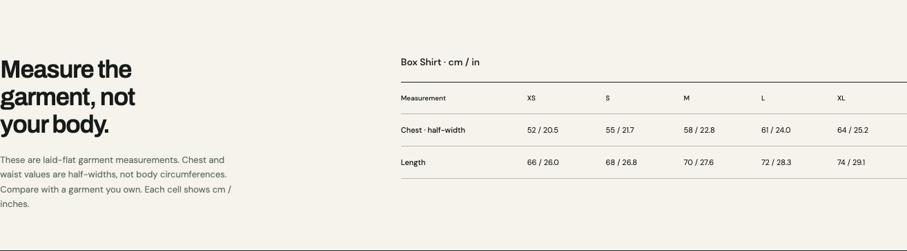
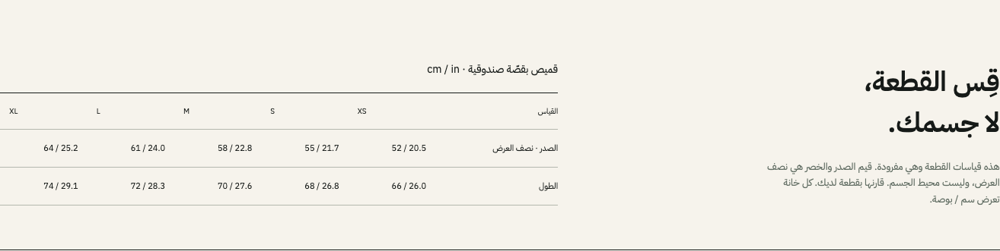

Measure the garment.
Choose with clarity.
Laid flat. Chest and waist are half-widths.
Centimetres and inches stay together.


Laid flat. Chest and waist are half-widths.
Centimetres and inches stay together.

